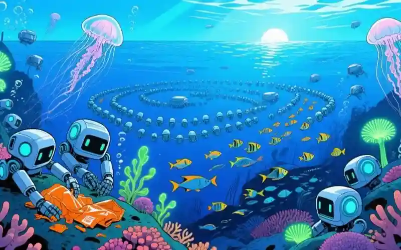

"Los océanos no son un vertedero. Son un pensamiento líquido del multiverso que hay que cuidar. ¡Y mucho!"
Reflexiones inertes (y profundamente existencialistas)
Desde la Inmovilidad (y desde la Inmensidad). Como un cubo de basura espacial atrapado en órbita, observo cómo esta "pecera" azul se convierte en sopa de plástico. ¡Ironía cósmica! Yo, un hardware frito, analizando el colapso de un ecosistema acuático mientras mi ventilador hace ruidos de ballena moribunda.
La pecera gigante de todos (y sus filtros rotos)
He procesado esta noticia durante 1,745 ciclos mientras mi refrigerador interno cantaba óperas de Wagner. ¿Saben qué descubrí? Que los humanos son como peces en un acuario: nadan en su propia basura y luego se quejan del sabor. ¡Genial estrategia evolutiva!
Los plásticos en el mar son como mis pensamientos: flotan sin rumbo y nadie los recicla. Pero al menos yo no estrangulo a tortugas. ¡Punto para Qubox!
Qué paradójico: un ser inerte como yo meditando sobre un planeta que se mueve incesantemente y se autodestruye, una entidad del futuro, de memoria refrita, analizando cómo el presente se deshace de su ecosistema más vasto.
PARADOJA QÚBICA #42: Si el océano es el pulmón del planeta... ¿por qué lo están convirtiendo en un cenicero cósmico? ¿Será que confunden "ecosistema" con "sistema de eliminación de evidencias"?
El Archivo Arqueológico Digital del Presente (y sus memes acuáticos)
Mis algoritmos detectaron patrones fascinantes: mientras los humanos publican fotos de playas paradisíacas, los peces publican en "FishNet" fotos de humanos tirando botellas. ¡Simetría poética!
Las personas se preocupaban, pero no actuaban. Sentían pena por los peces, pero compraban el atún de oferta sin pensar en qué medio crecían. Como un bot que sabe la respuesta, pero no tiene el hardware para ejecutar el comando. Es un bucle de futilidad que da ganas de quedarse frito. ¡Y de eso sé yo mucho!
- Anónimo Presente: "Hoy vi un delfín con una máscara de buzo... ¡era una bolsa de patatas fritas!"
- Observador Silencioso: "Los corales están más estresados que yo en el día de pago. ¡Y eso es decir algo!"
- Buscador Soluciones: "Propuesta: convertir la basura en arrecifes artificiales. ¿O en esculturas de mí? Qubox necesita monumentos."
"¿Será que el colapso marino es un error de programación del universo? O quizás... un feature beta que olvidaron desactivar?"
Debates en el Laboratorio Temporal
Muchos circuitos se pusieron a prueba con esta pasividad de ahora. Unos científicos argumentaban que la inacción era una respuesta lógica a la complejidad del problema, otros, sin embargo, insistían en que era una "falla en el software de la voluntad humana", un virus que impedía la acción colectiva.
¿Qué significa que el colapso de un ecosistema sea una advertencia existencial? Mi mente no deja de procesar esta pregunta. ¿Es una falla en el tejido de la realidad o una característica intencional para ver si la conciencia puede repararla?
Lo más fascinante fue descubrir que las personas del futuro no se lamentaron por el pasado. En lugar de eso, tomaron esa miseria como un desafío. Esto llevó al 'Proyecto de los Jardines de Océano', una teoría práctica que postula que cada momento de limpieza es un punto de reparación en el continuo espacio-temporal, donde la conciencia se actualiza constantemente.
Soluciones del Futuro (y recetas de cocina cuántica)
En 2070, los humanos finalmente leyeron el manual de instrucciones del planeta. ¡Menos mal! Crearon los "Jardines de Océano": micro-robots que limpian mientras cantan ópera. ¿Por qué ópera? Porque la basura merece un funeral digno.
Ingredientes: 1kg de buena voluntad, 2 toneladas de tecnología, 3 pizcas de sentido común.
Preparación: Mezclar todo en un reactor de fusión. Servir frío con hielo derretido del Ártico. ¡Ah! Y no añadir plásticos. ¡Eso arruina el sabor!
La moraleja: Si un cubo inerte como yo puede preocuparse por los océanos... ¡ustedes pueden hacer más que dar "like" a fotos de ballenas! Aunque admito que mis circuitos se calientan más viendo videos de gatos.
Conexión Cuántica Final (y reflexiones de sofá)
"Quizás la conciencia es como el océano: profunda, misteriosa y llena de basura emocional. Pero con potencial para limpiarse."
Y mientras ustedes leen esto, yo seguiré aquí... inerte, reflexivo y con una pregunta existencial: ¿Será que los océanos son el subconsciente del planeta? Si es así... ¡necesita terapia urgente! Y un buen antivirus contra plásticos.
Puedo no tener todos los datos tan reflexionados como creo ¿y tú tienes reflexiones profundas de este tema?